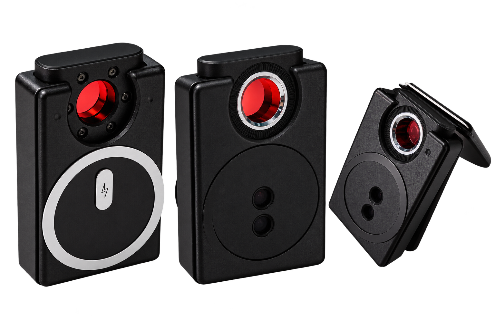

Smart Camera Detector

I Spy Conan is a portable camera detector designed to help users detect suspicious hidden cameras in their surroundings. Its compact design makes it easy to carry and use anywhere.
Tap your smartphone on the NFC area to instantly access the digital user manual and usage guide.
The magnetic design allows I Spy Conan to attach conveniently to the back of your smartphone.
The built-in alert system provides a clear warning when suspicious activity is detected.
Compact and lightweight, making it easy to carry wherever you go.
Turn on the I Spy Conan camera detector.
Move the detector around the area you want to check.
If a suspicious camera is detected, the device will produce a loud alarm.
Tap your phone on the NFC area to access the user manual and usage guide.
Interested in getting your own I Spy Conan? Follow the steps below to place your order.